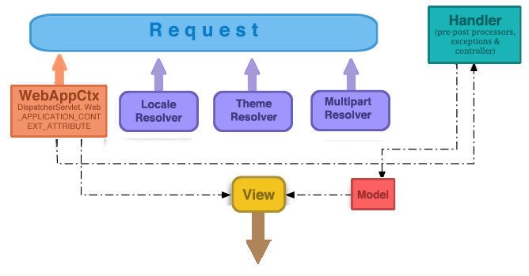

Arquitectura de las aplicaciones Spring MVC
Spring Web MVC es un framework diseñado alrededor de un DispatcherServlet que atiende las solicitudes de los requests a los manejadores, con handler mappings configurables, resolución de vistas, localización, y resolución de temas, así como el soporte de upload de archivos. Desde Spring 2.5 y reforzado en 3.0, el manejador por default está basado en anotaciones como @Controller y @RequestMapping, ofreciendo un ampli rango de firmas de métodos. Adicionalmente, desde Spring 3, el uso de anotaciones como @PathVariable permiten crear sitios RESTful.
SpringMVC esta basado en el principio: Open For extension, Close for modification.
En SpringMVC se puede usar cualquier objeto como un command o un form-backing object; no se necesitan implementar interfaces específicas del framework o heredar de algo. El binding(atado) de datos es altamente flexible, Spring hace las conversiones y tratamientos de los tipos que conforman la estructura del objeto.
La resolución de vistas de Spring es extremadamente flexible. Un Controller es tipicamente responsable de preparar un modelo en un Map y seleccionando un nombre de vista, aunque se podría escribir directamente al flujo del response para completar el request. La resolución de vistas es muy configurable y flexible, ya sea a través de beans de Spring o los encabezados del request. Se puede integrar directamente con tecnologías como JSP, Velocity, Freemarker, o generar directamente XML y JSON, o bien, generar hojas de cálculo.
Características de SpringMVC
- Clara separación de roles
- Configuración poderosa y directa del MVC y las clases de la aplicación como JavaBeans
- Adaptabilidad, sin ser invasivo, y flexible
- Código de negocio reusable, evitando la duplicación
- Binding personalizable en conjunto con validaciones
- Manejadores de mapeos y resolución de vistas personalizables
- Transferencia de modelos flexibles hacia las vistas
- Internacionalización y resolución de temas personalizable, con soporte àra JSP’s con o sin las librerías de tags de Spring
- Una librería de tags simple y poderosa que provee de características como data binding, temas, y generación de formularios mas fáciles de describir
- Beans cuyo ciclo de vida está en el alcance del request actual HTTP o del objeto
Session
Recomendaciones para entrar con SpringMVC
- La capa de servicio debe ser transaccional
- Cuando una operación de un Dao de Hibernate o JDBC falle la excepción debe ser trasladada
- Los objetos de la capa de servicio no deben llamar a la capa Web
- Un servicio de negocio que falla con una concurrencia relacionada puede ser reintentado
DispatcherServlet
Servlet 3.0
MyWebApplicationInitializer.java
DispatcherServlet es un simple Servlet que hereda de HttpServlet y por lo tanto hay que definirla en el descriptor web.xml- Cada
DispatcherServlet tiene su propio ApplicationContext, a este se le denomina WebApplicationContext
- Tras la inicialización del
DispatcherServlet, por convención el framework busca por un archivo con la notación: {nombre_del_servlet}-servlet.xml, que se debe de ubicar dentro del directorio WEB-INF de la aplicación
- Este archivo contiene todos los Beans de configuración del MVC
- El
DispatcherServlet cuenta con las siguientes propiedades:
contextClass - Clase que implementa el WebAppCtx, usada por el Servlet. Default: XmlWebApplicationContextcontextConfigLocation - Indica donde se puede encontrar la configuración del Servlenamespace - Namespace del WebAppCtx. Default: {nombre-del-servlet}-servlet
Hey! Recuerda la convención dle nombre del archivo de configuración de Spring con respecto al nombre del Servlet.
Elementos esenciales de SpringMVC
WebApplicationContext
- Es una extensión del
ApplicationContext de Spring con características adicionales para aplicaciones Web
- Se diferencia por que es capaz de resolver temas y conoce el Servlet con el que esta asociado
- El WebAppCtx va a contener la configuración de los elementos para que SpringMVC funcione
- El WebAppCtx va a poder usar los beans(Repositories, Services, etc.) que se declararon en el contexto de la aplicación
Los componentes de un WebApplicationContext son:
- HandlerMapping - Mapea los request de entrada a manejadores y una lista de preo y post procesadores. La implementación más popular soporta controladores anotados pero también existen otras implementaciones.
- HandlerAdapter - Ayuda al
DispatcherServlet a invocar al controlador asignado a la petición.
- ViewResolver - Resuelve nombres de vistas lógicas basados en String a tipos de
View
- LocaleResolver y LocaleContextResolver - Resuelve la localización del cliente usandolo y posiblemente su zona horario, en orden para ofrecer vistas internacionalizadas.
- ThemeResolver - Resuelve los temas que la aplicación web puede usar para ofrecer layouts personalizados.
- MultipartResolver - Parsea los request del tipo multi-part para procesar el soporte del uploads de archivos en las formas HTML
- HandlerExceptionResolver - Mapea excepciones a vistas, además de permitir código con manejo más elaborado para tratarlas.
- FlashMapManager - Almacena y entrega la entrada y salida de una variable
FlashMap que puede ser usado para pasar atributos de un request a otro, usualmente en un redirect.
Ciclo de vida del request
